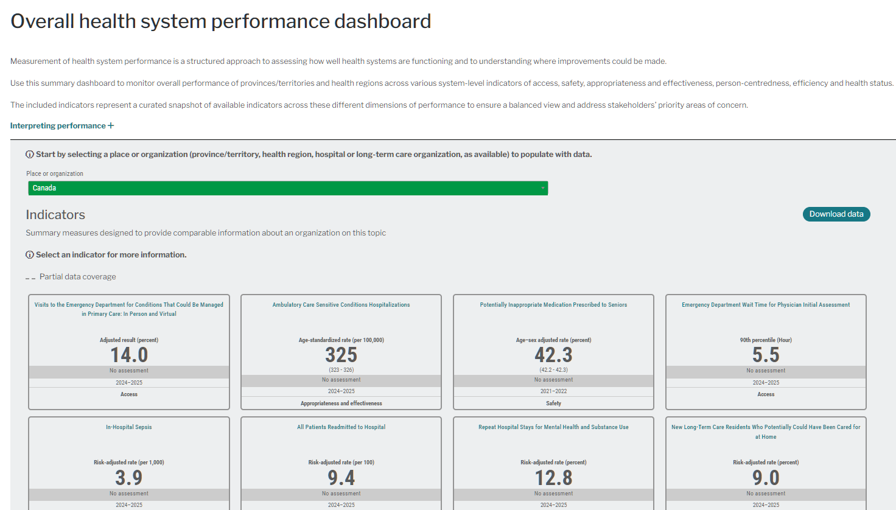
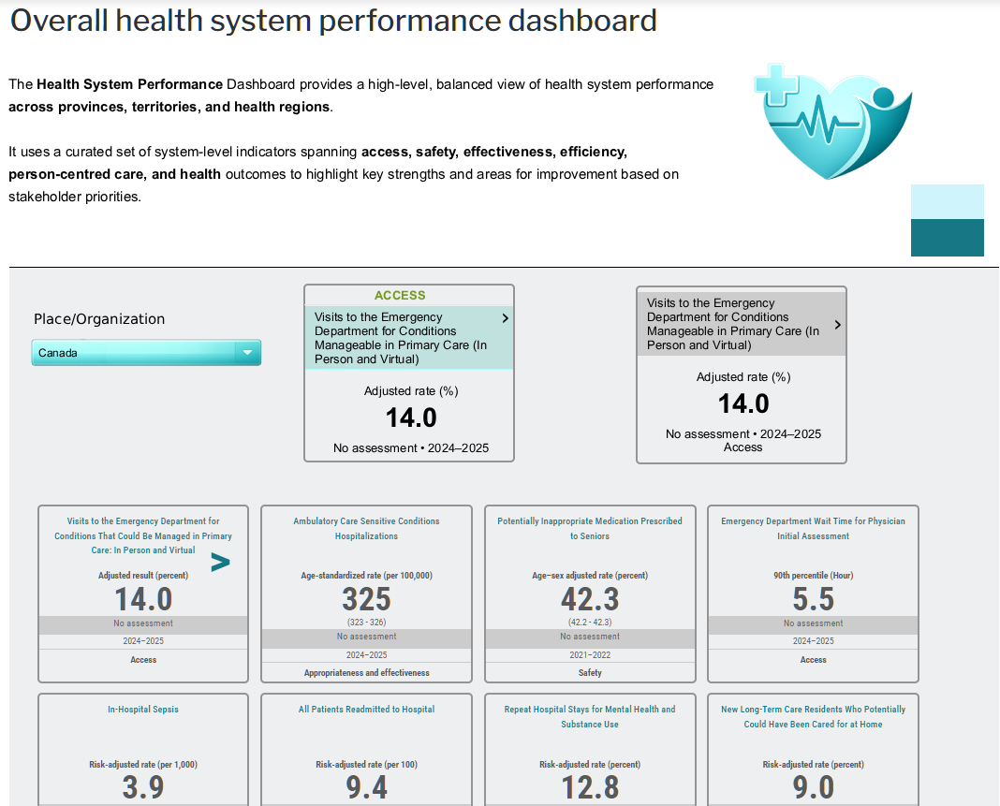

OVERLOADED INPUT
Before

Metric-heavy dashboard with competing signals
Projects

Metric-heavy dashboard with competing signals

Key metrics grouped by system goal for quick assessment
Eliminate competing signals
Structure by system goals
Prioritize actionable indicators